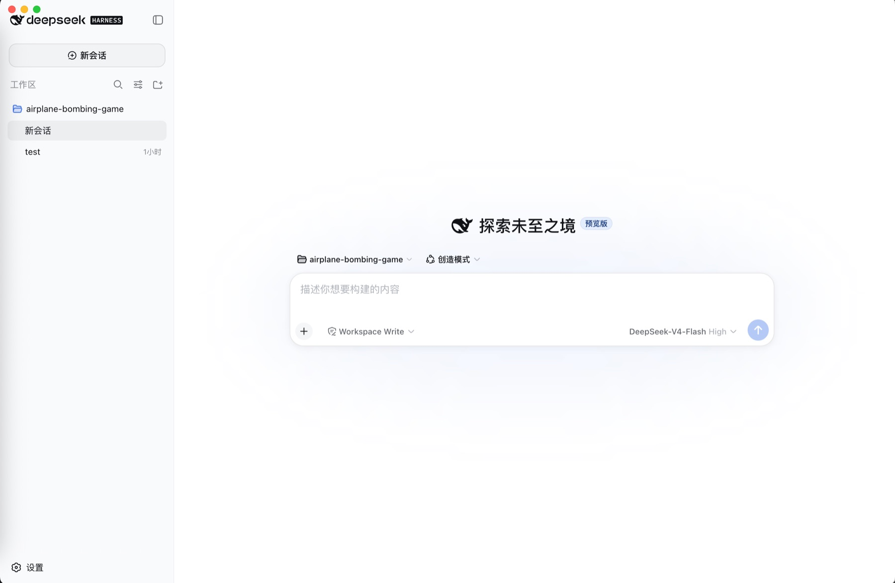

打开即用
自动启动 Harness 服务、选择可用端口并加载 Web UI，不再记忆命令或维护终端进程。
$
npx @deepseek-ai/dsh web
→
打开应用
DeepSeek Harness Desktop
将官方 DeepSeek Harness 完整封装为原生桌面体验。无需命令行，无需管理端口，打开应用即可开始工作。

保留官方 Harness 的能力与界面，只补齐桌面端需要的启动、窗口和系统集成。
自动启动 Harness 服务、选择可用端口并加载 Web UI，不再记忆命令或维护终端进程。
Harness 在本机运行，工作目录和会话保持在你的设备上。
同时提供 macOS、Windows 和 Linux 安装包，覆盖 Apple Silicon 与 Intel Mac。
当前版本 v0.3.5，可从 GitHub Releases 或夸克网盘下载。